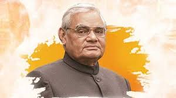

Atal Bihari Vajpayee
1924 - 2018
The Visionary Leader
Atal Bihari Vajpayee (25 December 1924 – 16 August 2018) was an Indian statesman and poet who served as the 10th Prime Minister of India. Known for his powerful oratory and progressive leadership, Vajpayee played a pivotal role in shaping India’s modern development and foreign policy. He was awarded the Bharat Ratna in 2015 and is remembered as a statesman who won hearts across party lines.
Key Contributions & Milestones
- Three-time Prime Minister of India: 1996, 1998–2004.
- Led India through the successful nuclear tests at Pokhran in 1998.
- Introduced the Golden Quadrilateral and Pradhan Mantri Gram Sadak Yojana.
- Renowned for his poetry and speeches that inspired millions.
- First non-Congress PM to serve a full term in office.
- Awarded Bharat Ratna, India’s highest civilian award in 2015.
- Known for promoting peace initiatives with Pakistan.